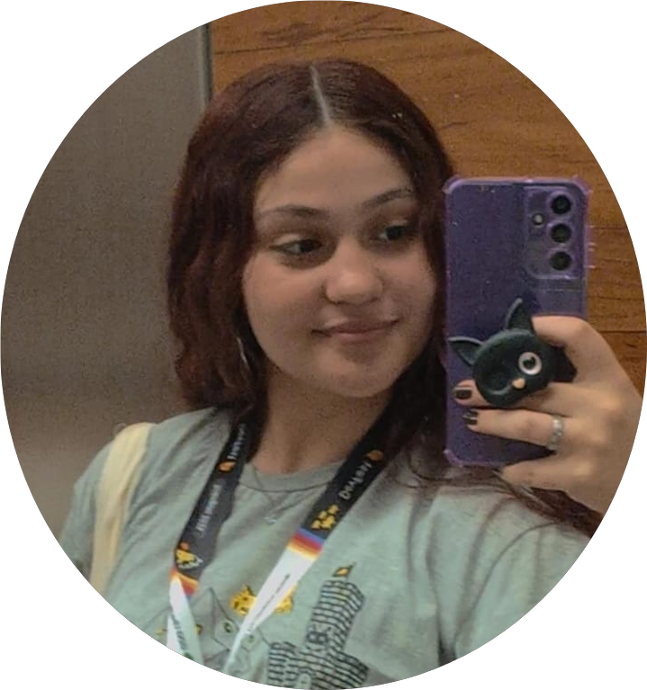

Olá, eu sou a Rafaella
Sou estudante e apaixonada por tecnologia, design, games e desenvolvimento web. Gosto de criar projetos criativos e aprender novas ferramentas para melhorar minhas habilidades.
Além da programação, gosto muito de cogumelos, gatos, livros, música, jogos e mundos de fantasia.
Ver meus projetos
Itinerário Formativo
Início do Tecnico em Computação Gráfica
Comecei meus estudos na área de tecnologia, antes nunca tinha sequer um computador mas depois de ter quebrado a cabeça por 3 horas em um projeto simples de calculadora me apaixonei por programação.
Programação e animação 2d
Meu primeiro jogo de nave que destroi meteoros, me apaixonei pelo desenvolvimento alí.
Primeira MTEC
Apresentei meu jogo 2d chamado Pílula da Salvação, onde a protagonista Jade, encontrava lixos e os jogava no lixo, mudando assim o passado e futuro do mundo.
Monitoria de Programação
Ainda no Ensino Médio ministrava monitorias de Programação e animação 3d. Ajudando meus colegas na diciplina gravei vídeos sobre modelagem 3d, iluminação e animação 3d. Utilizando tanto o Blender e o Unity.
Início da Graduação em Análise e Desenvolvimento de Sistemas
Logica de programação, início de desenvolvimento web. Início do projeto Bão de Prova, um site que ajuda os estudantes a passarem no vestibular.
Portifólio
Desenvolvimento desse portifólio.